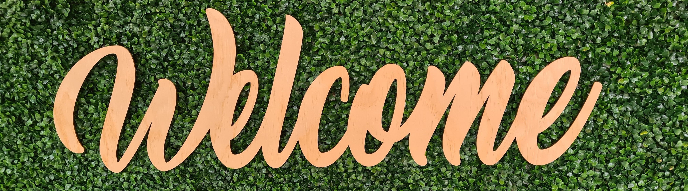

Welkom op mijn portfolio, mijn naam is Yannick van Eck en ik studeer Graduaat Programmeren (2 jarige opleiding) aan de Thomas More Geel
Op deze website zal ik al mijn prestaties plaatsen rond webdesign, zowel statisch als interactief
Ook zal ik verdere informatie geven over mezelf en kunt u ook mijn CV downloaden
Ik ben een kalm en spraakzaam persoon, maar ben niet goed met grote groepen.
Ik ben 1.95m en kleurenblind voor rode tinten (meer informatie hier over in deze link:Protanomaly)
Er is weinig te zeggen over wat deze site je niet kan vertellen dus suggereer ik dat u (de gebruiker/lezer) een keer op alle knopjes te drukken.
